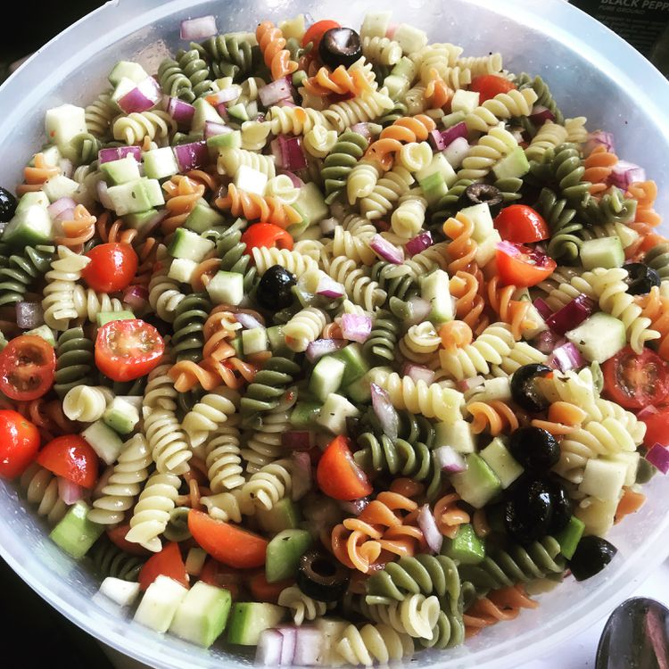

Home
Easy Rainbow Pasta Salad

Description
This rainbow pasta salad is really quick and easy to make. Great for picnics and summer parties.
Ingredients
- 1 (16 ounce) package tri-colored pasta assortment
- 2 large tomatoes, diced
- 1 large cucumber, peeled and diced
- 1 red onion, finely chopped
- 1 (16 ounce) bottle Italian-style salad dressing
Steps
- Bring a large pot of lightly salted water to a boil. Add pasta and cook until al dente, about 8 to 10 minutes; drain and rinse in cold water.
- Combine tomatoes, cucumbers, onion, cooled pasta and Italian dressing in a large bowl; toss to coat. Cover and refrigerate the salad for at least 1 hour to overnight.